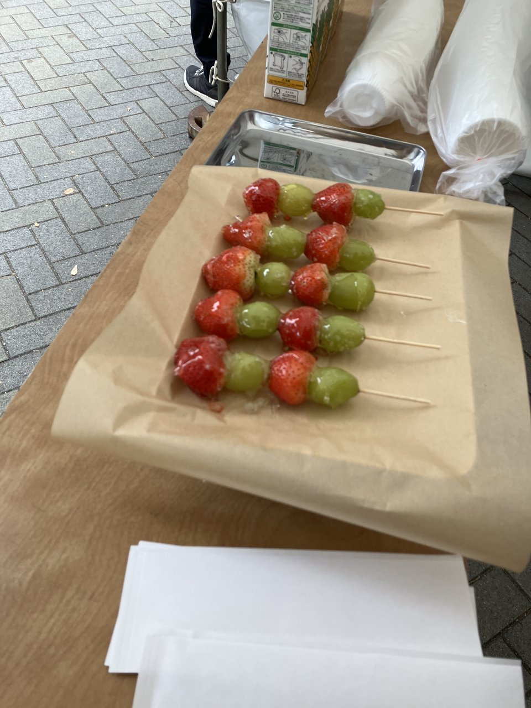
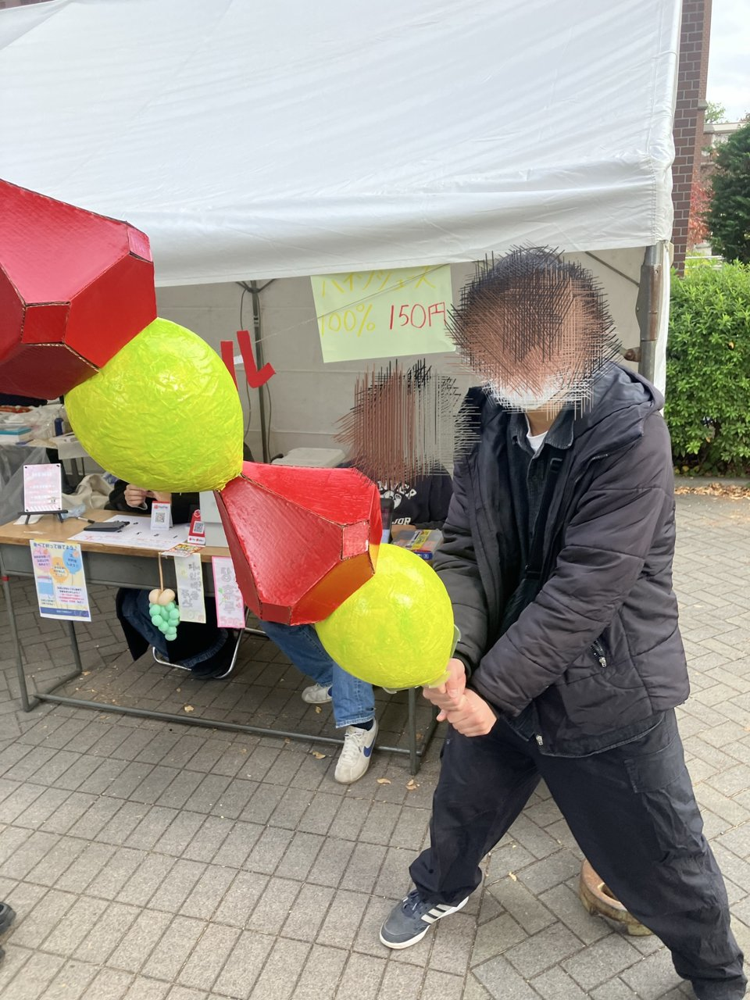
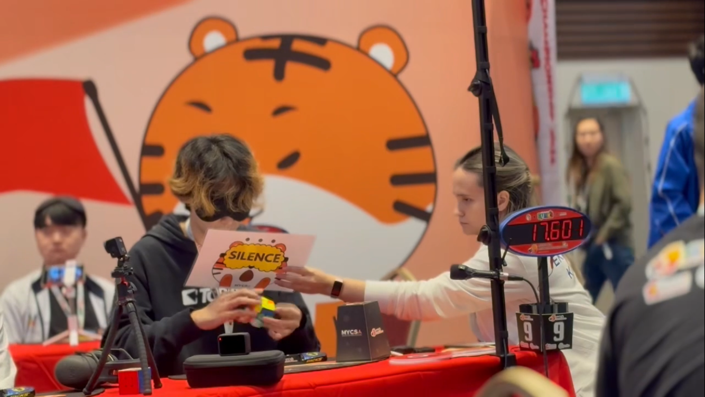
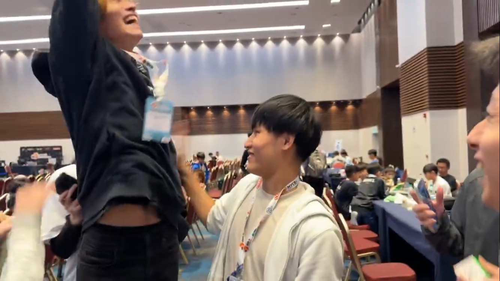
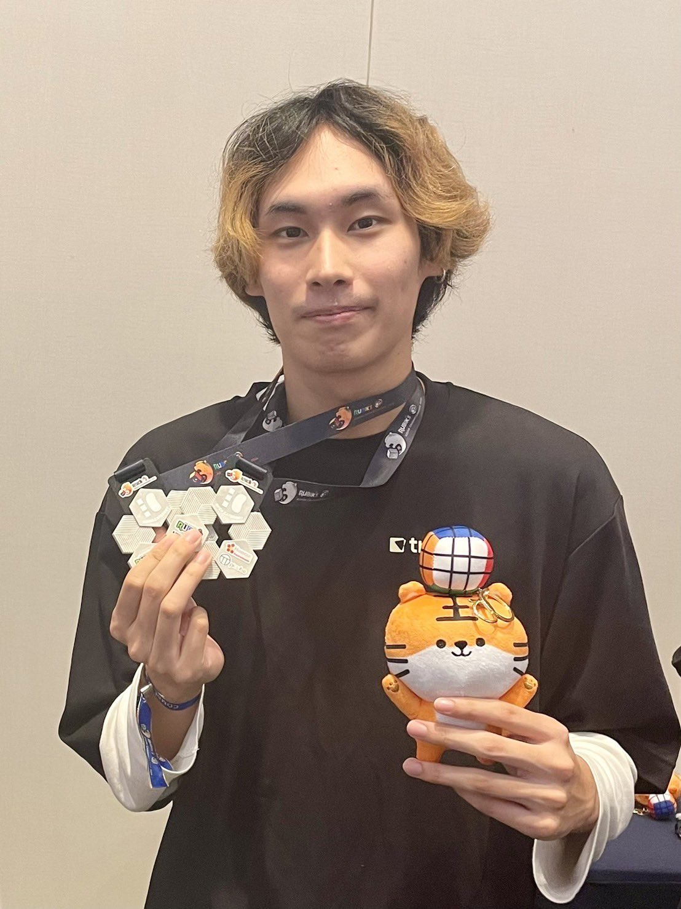
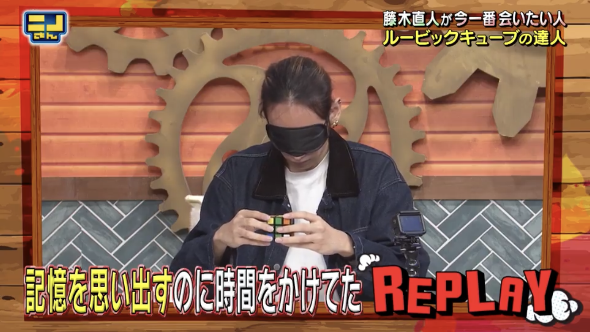
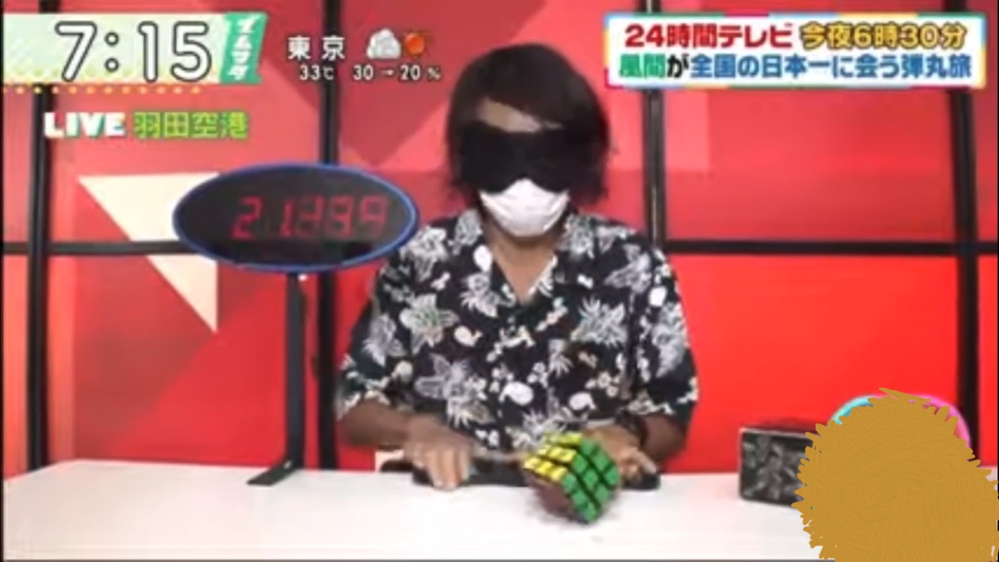
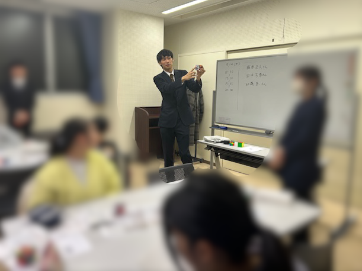
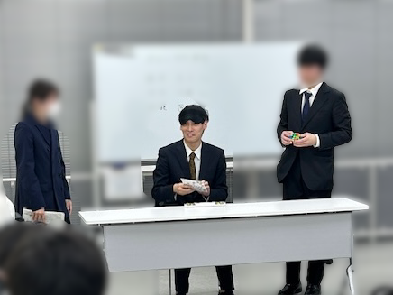

サマリー
- 研究：日本株の26年分・全企業4000社の有価証券報告書の非財務情報をOCR・LLMでスコア化して 因子分析を行っています。
- 将棋AIの開発：ResUNetを用いて20億局面を学習した「芽生将棋」で世界コンピュータ将棋選手権に2年連続出場。一次予選37チーム中4位で予選を突破。
- データ分析・モデリング：Python による時系列データの前処理・回帰分析。適切な手法を選び、学習・検証を完遂できます。
- 金融知識：日本証券アナリスト協会CMA試験1次レベルに合格、簿記2級取得。四季報や日経新聞の購読を日課とし、市場と経済への関心が高いです。
来歴
2021年〜｜ルービックキューブのプロ活動
- 目隠しルービックキューブの日本記録を3回更新
- 国際大会で入賞（2024年アジア大会準優勝）
- 「ニノさん」「24時間テレビ」などのメディアに出演
- 子ども向けのルービックキューブイベントを複数主催
2024年｜成蹊大学入学
成蹊大学 経済学部 経済数理学科に入学。金融とAIについて学び、研究・個人開発に取り組む。
2025年｜世界コンピュータ将棋選手権 一次予選突破
開発した将棋AI「芽生将棋」で出場し、一次予選を突破。
2026年｜世界コンピュータ将棋選手権 一次予選突破
「芽生将棋」で2年連続の一次予選突破。
取得資格・試験合格
- 基本情報技術者
- 応用情報技術者
- 日商簿記2級
- 日本証券アナリスト協会 CMA 第1次レベル試験合格
- 実用数学技能検定 準1級
学歴・研究
- 成蹊大学 経済学部 経済数理学科 3年（金融工学専攻）
- ゼミ研究テーマ：LLMによる非財務情報のスコア化
- 上記をもとに、CAPM理論を拡張した個別銘柄のリターン予測に取り組んでいます
AI・機械学習開発
要件定義・データ前処理・モデル構築・学習・検証まで、自らの手で一貫して取り組んできました。タスクに応じて適切なアーキテクチャを選び、学習を完遂できる点が強みです。
- 将棋AI：大規模ResNet（PyTorch）を設計・学習。世界コンピュータ将棋選手権に2年連続出場し、一次予選37チーム中4位で予選を突破。
- ルービックキューブ手順：LightGBM（勾配ブースティング）で手順の回しやすさを学習・点数化。
データ分析・開発
- R / Python による時系列データの前処理・回帰分析・可視化
- 要件定義から設計・実装・検証までを自ら手がけ、複数のWebアプリを制作・公開（下記「制作Webアプリ」参照）
制作Webアプリ
要件定義から設計・実装・公開までを自ら手がけて制作したWebアプリ。各デモはVercelで公開しています。
日本株シミュレーション
金融工学
MCMC / CAPM
マルコフ連鎖モンテカルロ法（MCMC）による日経平均の予測と、その推定値を用いたCAPM理論に基づく個別株リターン予想。さらにFama-Frenchの3ファクターモデルを用いて、日本株が各因子をどれほど持っているかをプロットしました。
デモを見る →
うごく手順表
Web App
可視化
ルービックキューブの基本手順 F2L・OLL・PLL を一番分かりやすく可視化。
デモを見る →
資格
- 基本情報技術者
- 応用情報技術者
- 日商簿記2級
- 日本証券アナリスト協会 CMA（一次レベル合格、二次レベルを来年受験）
- 実用数学技能検定 準1級
趣味
- 将棋：大学から始めて初段。成蹊大学の団体戦（2025年）でC2クラス優勝。
- 読書・個人開発
チームプロジェクト
-
成蹊大学文化会Instagram運用・模擬店リーダー担当
成蹊大学文化会Instagram
-
模擬店初出店でタンフルという新規商品に挑戦

-
企画・仕入れ・飴付けの研究・衛生管理などを担当して、チームの協力のお陰で成功に導くことができました。


- ルービックキューブの3大会の運営に協力
国内実績 / アジア大会 / 競技アプローチ
- 目隠しルービックキューブで日本記録更新（3回）
- 2022年 単発 19.86
- 2022年 平均 21.58
- 2023年 平均 19.55
- 単発・平均ともに日本人初の20秒切りを達成
- 国内・国外大会で優勝7回
- Rubik's WCA Asian Championship 2024 準優勝。
既存の818手順に加え、海外トップ層の2768フローティング手順群を日本で初めて採用・運用し、改善を重ねて実績化。



プロ・メディア活動
- ニノさん（2022年7月放映）
- 24時間テレビ（2022年8月放映）
- ニノさん（2023年1月放映）


教育
- 目隠しルービックキューブのHowTo動画が8万再生。コミュニティで最も多く再生されている。
- 教材をきっかけに多くの人が目隠しルービックキューブを成功させ、ある視聴者は日本3位まで到達

- 東京化学技術館 パズルデーでステージイベント・講師参加(2回)
- 小学校での指導
- 個別指導塾と提携し30人規模のイベントを5回主催
- のべ200人以上にルービックキューブの解き方を指導


